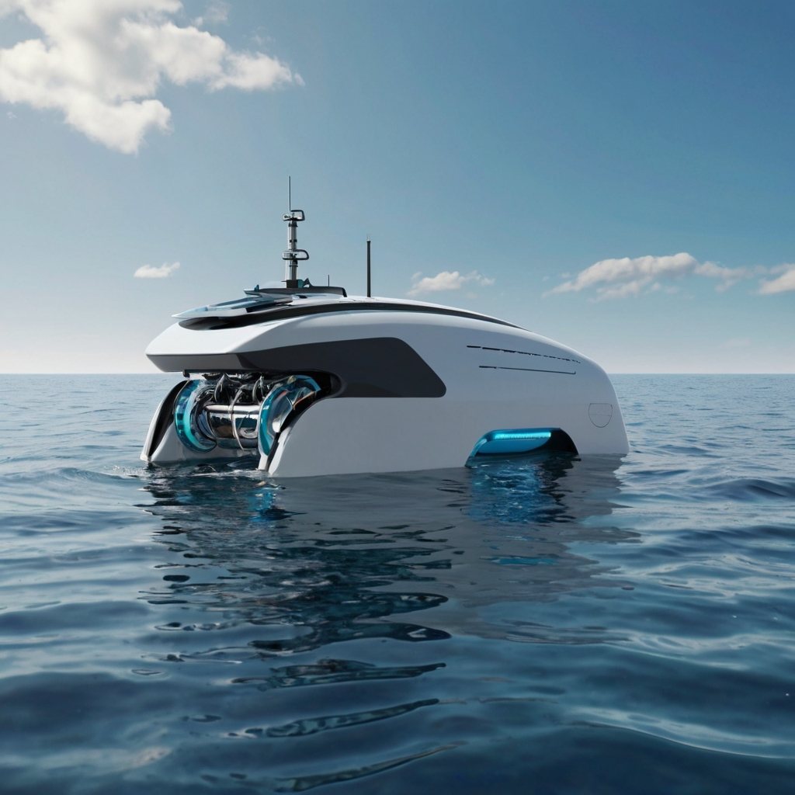

Um robô marinho altamente avançado, projetado para proteger e preservar os ecossistemas marinhos. Equipado com uma variedade de sensores de última geração, este robô é capaz de detectar manchas de petróleo na água usando um sensor de luminosidade especializado, monitorar a temperatura da água para identificar mudanças ambientais, e até mesmo usar sensores de som para evitar que peixes e animais marinhos entrem em áreas de risco.

Além disso, este robô utiliza um sistema de previsão baseado em cálculos matemáticos para antecipar possíveis vazamentos e necessidades de manutenção em instalações petrolíferas, contribuindo para a prevenção de desastres ambientais. Com sua capacidade de prever e responder a situações de emergência, este robô é uma ferramenta vital para a proteção dos oceanos.
Para garantir sua operação contínua e sustentável, este robô utiliza energia renovável, como painéis solares, para alimentar seus sistemas e melhorar seu desempenho. Com sua autonomia e capacidade de operação totalmente autônoma, este robô representa uma solução inovadora e eficaz para proteger e preservar o delicado ecossistema marinho.